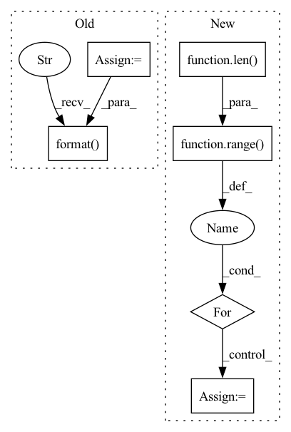

Pattern ID :41389
Before Change
x_min = np.min(true_verts[:,t+1,:], axis=0)
x_max = np.max(true_verts[:,t+1,:], axis=0)
x_range = x_max-x_min
true_area = np.prod(x_range)
// true_hull = ConvexHull(true_verts[:, t+1, :])
// true_area = true_hull.volume
Abp, bbp = range_to_polytope(backprojection_sets[t].range)
estimated_verts = pypoman.polygon.compute_polygon_hull(Abp, bbp)
estimated_hull = ConvexHull(estimated_verts)
estimated_area = estimated_hull.volume
print("estimated: {} --- true: {}".format( estimated_area, true_area) )
print("estimated range: {} --- true range: {}".format(backprojection_sets[t].range, x_range))
errors.append((estimated_area - true_area) / true_area)After Change
num_samples=1e8
)
true_verts = np.flip(true_verts_reversed, axis=1)
num_steps = len( backprojection_sets)
for t in range( num_steps):
// x_min = np.min(true_verts[:,t+1,:], axis=0)
// x_max = np.max(true_verts[:,t+1,:], axis=0)
// x_range = x_max-x_min
// true_area = np.prod(x_range)
true_hull = ConvexHull(true_verts[:, t+1, :])
true_area = true_hull.volume
// true_hull = ConvexHull(true_verts[:, t+1, :])
// true_area = true_hull.volumeIn pattern: SUPERPATTERN
Frequency: 3
Non-data size: 6
Instances Fragment ID: 116453170
Project Name: mit-acl/nn_robustness_analysis
Commit Name: b7a8819901416af543775010a3817dc7675efd68
Time: 2022-08-12
Author: nrober1122@gmail.com
File Name: nn_closed_loop/nn_closed_loop/partitioners/ClosedLoopPartitioner.py
M Class Name: ClosedLoopPartitioner
N Class Name: ClosedLoopPartitioner
M Method Name: get_backprojection_error(6)
N Method Name: get_backprojection_error(5)
M Parent Class: partitioners.Partitioner
N Parent Class: partitioners.Partitioner
M File Name: nn_closed_loop/nn_closed_loop/partitioners/ClosedLoopPartitioner.py
N File Name: nn_closed_loop/nn_closed_loop/partitioners/ClosedLoopPartitioner.py
M Start Line: 333
M End Line: 392
N Start Line: 338
N End Line: 435
Before Change
if type(regex_strs) is str and replace:
regex_strs = word_replace_back(regex_strs)
split_keys = word_replace_back(split_keys)
qualities = word_replace_back(qualities)
for regex_str in regex_strs:
print("check regs {}. log found: ".format(osp.join(prefix_dir, regex_str)))
log_found = glob.glob(osp.join(prefix_dir, regex_str))
dirs.extend(log_found)
// print("regex str :{}. log found".format(regex_str))
for log in log_found:
print(log)
results = plot_util.load_results(dirs, names=qualities + [xlabel],
enable_monitor=False, x_bound=[xlabel, x_bound], use_buf=use_buf)
print("---- load dataset --- ")
// y_names = ["acc/adjusted_r2", "acc/accurancy_trans"]
// eval_policy/coupon_avg_rate
// postfixs = ["coupon_avg_rate", "coupon_predict_rate", "roi_avg", "roi_predict", "sum_avg_gmv", "sum_fos",
// "sum_predict_gmv", "sum_spend"]
// old
// for idx, quality in enumerate(qualities):
// y_names = [quality]
// // y_names = ["eval_policy/" + postfix, "eval_real/" + postfix, "eval_zero/" + postfix]
// // split_fn: 我们要对这个指标分成多张子图的时候用的
// // group_fn: r 是遍历到的progress.csv的名字， split_keys 是我们要区分的实验组；y_names是我们要评估的指标
// plot_util.plot_results(results, xy_fn= lambda r, y_names: csv_to_xy(r, DEFAULT_X_NAME, y_names),
// // xy_fn=lambda r: ts2xy(r["monitor"], "info/TimestepsSoFar", "diff/driver_1_2_std"),
// // split_fn=lambda r: picture_split(taskpath=r, split_keys=split_keys, y_names=y_names)[0],
// group_fn=lambda r: picture_split(taskpath=r, split_keys=split_keys, y_names=y_names), // picture_split(taskpath=r, y_names=y_names),
// average_group=True, resample=int(1e3),
// ylabel=quality, xlabel=DEFAULT_X_NAME)
// file_name = "r:{},k:{},q:{}.png".format(regex_strs, split_keys, quality)
// file_name = word_replace(file_name)
//
// import os
// dir_name = "../res/pic/" + prefix_dir[2:] + "/"
// os.makedirs(dir_name, exist_ok=True)
// plt.savefig(dir_name + file_name)
// print("res related location: {}".format("../pic/" + prefix_dir[2:] + file_name))
y_names = qualities // []
if ylabel is None:
ylabel = qualities
// y_names = ["eval_policy/" + postfix, "eval_real/" + postfix, "eval_zero/" + postfix]
// split_fn: 我们要对这个指标分成多张子图的时候用的
// group_fn: r 是遍历到的progress.csv的名字， split_keys 是我们要区分的实验组；y_names是我们要评估的指标
_, _, lgd, texts = plot_util.plot_results(results, xy_fn= lambda r, y_names: csv_to_xy(r, DEFAULT_X_NAME, y_names,
scale_dict, x_bound=x_bound, x_start=x_start, y_bound=y_bound,
remove_outlier=remove_outlier),
// xy_fn=lambda r: ts2xy(r["monitor"], "info/TimestepsSoFar", "diff/driver_1_2_std"),
// split_fn=lambda r: picture_split(taskpath=r, split_keys=split_keys, y_names=y_names)[0],
group_fn=lambda r: picture_split(taskpath=r, split_keys=split_keys, y_names=y_names), // picture_split(taskpath=r, y_names=y_names),
average_group=True, resample=resample,
legend_outside=legend_outside, smooth_step=smooth_step,
ylabel=ylabel, xlabel=xlabel, replace_legend_keys=replace_legend_keys,
*args, **kwargs)
print("--- complete process ---")
file_name = "r:{},k:{},q:{}.pdf".format( regex_strs, split_keys, qualities)
file_name = word_replace(file_name)
if save_name is not None:
import os
dir_name = "../res/pic/" + prefix_dir[2:] + "/"After Change
scale_dict = {}
if misc_scale_index is None:
misc_scale_index = []
for i in range(len( qualities) ):
if i in misc_scale_index:
scale_dict[qualities[i]] = misc_scale[misc_scale_index.index(i)]
else:
scale_dict[qualities[i]] = 1
_, _, lgd, texts = plot_util.plot_results(results, xy_fn= lambda r, y_names: csv_to_xy(r, DEFAULT_X_NAME, y_names,
scale_dict, x_start=x_start, y_bound=y_bound,
remove_outlier=remove_outlier), Fragment ID: 116453195
Project Name: xionghuichen/rlassistant
Commit Name: c960619032588e7490bfcecc6c8aa20a04a0bddf
Time: 2020-12-21
Author: zpcxh95@outlook.com
File Name: RLA/easy_plot/plot_func.py
M Class Name: AnonimousClass
N Class Name: AnonimousClass
M Method Name: plot_res_func(17)
N Method Name: plot_res_func(19)
M Parent Class:
N Parent Class:
M File Name: RLA/easy_plot/plot_func.py
N File Name: RLA/easy_plot/plot_func.py
M Start Line: 91
M End Line: 173
N Start Line: 95
N End Line: 150
Before Change
pred_ner, pred_rel = self.model(data_item, is_test=True)
length = len([c for c in data_item["text"][0]]) // 测试的时候只有一个样例
pred_ner, pred_rel = pred_ner[0], pred_rel[0]
pred_rel_list = []
loc = pred_rel.nonzero()
for item in loc:
item = item.cpu().numpy()
if math.fabs(item[2]) < 0.1:
continue
pred_rel_list.append([item[0], item[1], self.id2rel[item[2]]])
token_pred = []
cnt = 0
for i in pred_ner:
if cnt >= length:
break
token_pred.append(self.id2token_type[i])
cnt += 1
print("token_pred: {}".format(token_pred))
print(data_item["text"][0])
print("pred_rel_list: {}".format( pred_rel_list) )
self.model.train(True)
rel_triple = self.convert2StandardOutput(data_item, 0, token_pred, pred_rel_list)
// print("提取得到的关系三元组:\n {}".format(rel_triple))After Change
texts = [text for text in data_item["text"]]
lengths = [len([c for c in data_item["text"][i]]) for i in range(self.config.batch_size)] // 测试的时候只有一个样例
token_pred = [[] for _ in range(self.config.batch_size)]
for i in range(len( pred_ner) ):
cnt = 0
for id in pred_ner[i]:
token_pred[i].append(self.id2token_type[id])
cnt += 1
if cnt >= lengths[i]:
break
self.model.train(True)
rel_triple_list = []
for i in range(self.config.batch_size):
rel_triple = self.convert2StandardOutput(data_item, i, token_pred[i], pred_rel_list[i])
rel_triple_list.append(rel_triple) Fragment ID: 116453183
Project Name: mangonihao/multiheadjointentityrelationextraction_simple
Commit Name: 2a04d85796b2ad1e63aef4a04461dc6aa05ea4c1
Time: 2021-03-27
Author: 2075419247@qq.com
File Name: mains/trainer.py
M Class Name: Trainer
N Class Name: Trainer
M Method Name: predict(1)
N Method Name: predict(1)
M Parent Class:
N Parent Class:
M File Name: mains/trainer.py
N File Name: mains/trainer.py
M Start Line: 182
M End Line: 204
N Start Line: 183
N End Line: 206